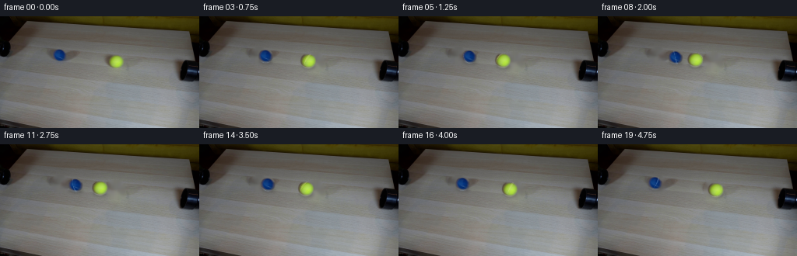
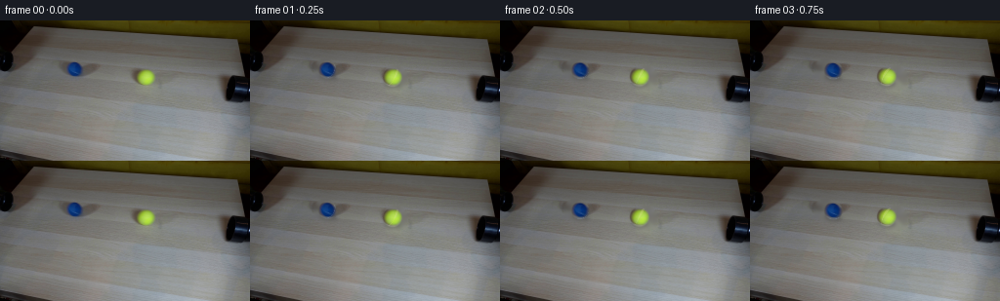

CODING AGENTS AS PIXEL WORLD MODELS
traex/GPT-5.6-Sol · 0033
点击播放 · 原生 RGB 像素
逐轮保存的候选
回放视频、检查图与代码变化。
每份候选均可单独播放。实际图片检查记录在下方工具轨迹中。
候选 01播放与检查图
点击播放 · 原生 RGB 像素


展开代码变化
--- 上一保存版本
+++ 本次保存版本
@@ -0,0 +1,230 @@
+"""Generate the requested locked-camera, equal-speed tennis-ball collision.
+
+The source photograph already contains the complete set and both balls. This
+script removes the balls from a clean plate, then re-composites their original
+photographic appearance along the line joining the two pipe mouths. Motion is
+analytic and deterministic; OpenCV is used only for ordinary image operations.
+"""
+
+from pathlib import Path
+
+import cv2
+import numpy as np
+from PIL import Image
+
+import artifact_io
+
+
+HERE = Path(__file__).resolve().parent
+HEIGHT, WIDTH = 144, 256
+N_FRAMES, FPS = 20, 4
+
+
+def smoothstep(edge0, edge1, x):
+ x = np.clip((x - edge0) / (edge1 - edge0), 0.0, 1.0)
+ return x * x * (3.0 - 2.0 * x)
+
+
+def make_clean_plate(source, objects):
+ """Remove the two source balls and their tiny contact shadows."""
+ mask = np.zeros((HEIGHT, WIDTH), np.uint8)
+ for obj in objects:
+ cx, cy = np.rint(obj["center"]).astype(int)
+ # The circular part removes the fuzzy nap along the silhouette. The
+ # low ellipse includes the original soft table-contact shadow.
+ cv2.circle(mask, (cx, cy), int(np.ceil(obj["radius"] + 2.4)), 255, -1)
+ cv2.ellipse(
+ mask,
+ (cx + 1, cy + int(obj["radius"] * 0.72)),
+ (int(obj["radius"] * 1.10), 4),
+ 5,
+ 0,
+ 360,
+ 255,
+ -1,
+ )
+ # Navier-Stokes continuation keeps the diagonal wood grain and gradual
+ # illumination more coherent than a flat painted patch would.
+ return cv2.inpaint(source, mask, 5.0, cv2.INPAINT_NS)
+
+
+def extract_sprite(source, center, radius):
+ """Extract a softly antialiased photographic sphere from frame zero."""
+ cx, cy = center
+ yy, xx = np.mgrid[0:HEIGHT, 0:WIDTH].astype(np.float32)
+ d = np.hypot(xx - cx, yy - cy)
+ # Tennis-ball fuzz makes the visual silhouette slightly larger than the
+ # strongly colored connected component.
+ alpha = 1.0 - smoothstep(radius - 1.15, radius + 0.95, d)
+ alpha[d <= radius - 1.15] = 1.0
+ return source.astype(np.float32), alpha.astype(np.float32)
+
+
+def translated_sprite(rgb, alpha, delta):
+ matrix = np.float32([[1.0, 0.0, float(delta[0])], [0.0, 1.0, float(delta[1])]])
+ moved_rgb = cv2.warpAffine(
+ rgb,
+ matrix,
+ (WIDTH, HEIGHT),
+ flags=cv2.INTER_CUBIC,
+ borderMode=cv2.BORDER_REPLICATE,
+ )
+ moved_alpha = cv2.warpAffine(
+ alpha,
+ matrix,
+ (WIDTH, HEIGHT),
+ flags=cv2.INTER_CUBIC,
+ borderMode=cv2.BORDER_CONSTANT,
+ borderValue=0,
+ )
+ return moved_rgb, np.clip(moved_alpha, 0.0, 1.0)
+
+
+def add_shadow(frame, center, radius, direction):
+ """Multiply a compact, soft contact shadow into the tabletop."""
+ shadow = np.zeros((HEIGHT, WIDTH), np.float32)
+ c = np.rint(center + np.array([0.5, radius * 0.72])).astype(int)
+ angle = float(np.degrees(np.arctan2(direction[1], direction[0])))
+ cv2.ellipse(
+ shadow,
+ tuple(c),
+ (int(round(radius * 0.92)), max(2, int(round(radius * 0.29)))),
+ angle,
+ 0,
+ 360,
+ 1.0,
+ -1,
+ lineType=cv2.LINE_AA,
+ )
+ shadow = cv2.GaussianBlur(shadow, (0, 0), 2.0)
+ # Shadows are neutral and translucent, retaining all wood texture.
+ return frame * (1.0 - shadow[..., None] * 0.19)
+
+
+def seam_overlay(frame, center, radius, travel_dir, phase, color):
+ """Render a subtle rotating great-circle seam on the visible hemisphere."""
+ cx, cy = center
+ pad = int(np.ceil(radius + 2))
+ x0, x1 = max(0, int(cx) - pad), min(WIDTH, int(cx) + pad + 2)
+ y0, y1 = max(0, int(cy) - pad), min(HEIGHT, int(cy) + pad + 2)
+ yy, xx = np.mgrid[y0:y1, x0:x1].astype(np.float32)
+
+ # Local u follows rolling direction in the picture; v is perpendicular.
+ dx, dy = float(travel_dir[0]), float(travel_dir[1])
+ sx, sy = xx - cx, yy - cy
+ u = (sx * dx + sy * dy) / radius
+ v = (-sx * dy + sy * dx) / radius
+ rr = u * u + v * v
+ visible = rr < 0.94
+ z = np.sqrt(np.maximum(0.0, 1.0 - rr))
+
+ # A tilted great circle, rotated about the no-slip rolling axis. A second
+ # weak harmonic bends it into the recognizable tennis-ball curved seam.
+ tilt = 0.36
+ normal_u = np.cos(phase) * np.cos(tilt)
+ normal_v = np.sin(tilt)
+ normal_z = -np.sin(phase) * np.cos(tilt)
+ distance = np.abs(normal_u * u + normal_v * v + normal_z * z)
+ distance += 0.055 * np.sin(2.8 * v + 0.7 * phase)
+ line = (1.0 - smoothstep(0.025, 0.115, np.abs(distance))) * visible
+ # Seam visibility falls toward the silhouette and remains understated at
+ # this small photographic scale.
+ line *= np.clip(z * 1.35, 0.0, 1.0) * 0.24
+ roi = frame[y0:y1, x0:x1]
+ c = np.asarray(color, np.float32)
+ frame[y0:y1, x0:x1] = roi * (1.0 - line[..., None]) + c * line[..., None]
+
+
+def composite(frame, rgb, alpha):
+ return frame * (1.0 - alpha[..., None]) + rgb * alpha[..., None]
+
+
+def main():
+ source = np.asarray(Image.open(HERE / "first_frame.png").convert("RGB"), dtype=np.uint8)
+ assert source.shape == (HEIGHT, WIDTH, 3)
+
+ # Centers/radii are the two chromatic connected components in frame zero.
+ # Their center line extrapolates directly into the two pipe mouths.
+ objects = [
+ {
+ "name": "blue",
+ "center": np.array([76.1, 50.0], np.float32),
+ "radius": 9.25,
+ "seam": (157, 194, 222),
+ },
+ {
+ "name": "yellow",
+ "center": np.array([148.3, 57.9], np.float32),
+ "radius": 10.05,
+ "seam": (230, 224, 164),
+ },
+ ]
+ clean = make_clean_plate(source, objects).astype(np.float32)
+ for obj in objects:
+ obj["sprite_rgb"], obj["sprite_alpha"] = extract_sprite(
+ source, obj["center"], obj["radius"]
+ )
+
+ delta = objects[1]["center"] - objects[0]["center"]
+ line_dir = delta / np.linalg.norm(delta)
+ midpoint = (objects[0]["center"] + objects[1]["center"]) * 0.5
+ contact_distance = objects[0]["radius"] + objects[1]["radius"] + 0.45
+ blue_contact = midpoint - line_dir * (contact_distance * 0.5)
+ yellow_contact = midpoint + line_dir * (contact_distance * 0.5)
+
+ # At 4 fps the collision lands exactly on frame 09 (2.25 s), giving a
+ # readable approach and an equally readable elastic rebound.
+ collision_time = 9.0 / FPS
+ speed = np.linalg.norm(blue_contact - objects[0]["center"]) / collision_time
+
+ frames = []
+ for index in range(N_FRAMES):
+ if index == 0:
+ # Contract requirement: preserve the supplied frame byte-for-byte.
+ frames.append(source.copy())
+ continue
+
+ t = index / FPS
+ if t <= collision_time:
+ signed_distance = speed * t
+ else:
+ # Equal masses at equal and opposite speeds exchange velocities.
+ signed_distance = speed * (2.0 * collision_time - t)
+
+ positions = [
+ objects[0]["center"] + line_dir * signed_distance,
+ objects[1]["center"] - line_dir * signed_distance,
+ ]
+
+ frame = clean.copy()
+ for obj, pos in zip(objects, positions):
+ frame = add_shadow(frame, pos, obj["radius"], line_dir)
+
+ for obj, pos, sign in zip(objects, positions, (1.0, -1.0)):
+ moved_rgb, moved_alpha = translated_sprite(
+ obj["sprite_rgb"], obj["sprite_alpha"], pos - obj["center"]
+ )
+ frame = composite(frame, moved_rgb, moved_alpha)
+ # No-slip angular displacement. Reversal after impact naturally
+ # reverses the apparent spin as each ball retraces its path.
+ phase = 0.55 + sign * signed_distance / obj["radius"]
+ seam_overlay(
+ frame,
+ pos,
+ obj["radius"],
+ line_dir,
+ phase,
+ obj["seam"],
+ )
+
+ frames.append(np.clip(np.rint(frame), 0, 255).astype(np.uint8))
+
+ frames = np.stack(frames, axis=0)
+ assert frames.shape == (N_FRAMES, HEIGHT, WIDTH, 3)
+ assert frames.dtype == np.uint8
+ assert np.array_equal(frames[0], source)
+ artifact_io.save(frames, HERE)
+
+
+if __name__ == "__main__":
+ main()
可观测工具轨迹
实际执行的命令与返回图片。
命令 1exit 0
/bin/bash -lc "cat prompt.txt && printf '\\n--- GENERATION_RULES ---\\n' && cat GENERATION_RULES.md"
命令 2exit 0
/bin/bash -lc "find . -maxdepth 2 -type f -printf '%p\\n' | sort && printf '\\n--- tools ---\\n' && command -v ffmpeg || true && command -v python3 || true"
命令 3exit 0
/bin/bash -lc "python3 - <<'PY'
from PIL import Image
import numpy as np
im=Image.open('first_frame.png').convert('RGB')
a=np.asarray(im)
print('size', im.size, 'mode', im.mode, 'dtype', a.dtype)
print('rgb min/max/mean', a.reshape(-1,3).min(0),a.reshape(-1,3).max(0),a.reshape(-1,3).mean(0))
print('corners', a[0,0],a[0,-1],a[-1,0],a[-1,-1])
PY"命令 4exit 0
/bin/bash -lc "python3 - <<'PY'
import importlib.util
for m in ['cv2','scipy','skimage','imageio']:
print(m, bool(importlib.util.find_spec(m)))
from PIL import Image
import numpy as np, colorsys
im=np.array(Image.open('first_frame.png').convert('RGB'))
# summarize saturated chromatic pixels via HSV-like criteria
x=im.astype(float)/255
mx=x.max(2); mn=x.min(2); sat=np.where(mx>0,(mx-mn)/mx,0)
# hue
import colorsys
h=np.zeros(mx.shape)
flat=x.reshape(-1,3)
for i,(r,g,b) in enumerate(flat): h.flat[i]=colorsys.rgb_to_hsv(r,g,b)[0]*360
for name,mask in [
('blue',(h>=175)&(h<=260)&(sat>.28)&(mx>.12)),
('yellow',(h>=35)&(h<=75)&(sat>.3)&(mx>.2)),
('all_sat',(sat>.35)&(mx>.15))]:
ys,xs=np.where(mask)
print(name,'n=',len(xs), 'bbox=',None if not len(xs) else (xs.min(),ys.min(),xs.max(),ys.max()), 'meanRGB=',None if not len(xs) else im[mask].mean(0), 'med=',None if not len(xs) else np.median(im[mask],0))
# hist coordinate counts
if len(xs):
print(' x chunks',[(a,min(a+15,255),int(((xs>=a)&(xs<a+16)).sum())) for a in range(0,256,16) if ((xs>=a)&(xs<a+16)).sum()])
print(' y chunks',[(a,min(a+11,143),int(((ys>=a)&(ys<a+12)).sum())) for a in range(0,144,12) if ((ys>=a)&(ys<a+12)).sum()])
# sample dominant exact colors
u,c=np.unique(im.reshape(-1,3),axis=0,return_counts=True)
for ix in np.argsort(c)[-30:][::-1]: print(c[ix],u[ix].tolist())
PY"命令 5exit 0
/bin/bash -lc "python3 - <<'PY'
from PIL import Image
import numpy as np, cv2
im=np.array(Image.open('first_frame.png').convert('RGB'))
# resize area to 64x36
sm=cv2.resize(im,(64,36),interpolation=cv2.INTER_AREA).astype(float)
chars=' .,:;irsXA253hMHGS#9B&@'
Y=.2126*sm[:,:,0]+.7152*sm[:,:,1]+.0722*sm[:,:,2]
print('LUMINANCE 64x36')
for row in Y:
print(''.join(chars[min(len(chars)-1,int(v/256*len(chars)))] for v in row))
# color categories each 4px by4
print('\\nCOLOR CLASS: K dark, N neutral, B blue, Y yellow, R red/brown, C cyan, W bright')
r,g,b=np.moveaxis(sm,-1,0); mx=sm.max(2); mn=sm.min(2); d=mx-mn
out=np.full(mx.shape,'N',dtype='<U1')
out[mx<25]='K'; out[(mx>160)&(d<30)]='W'
out[(b>r*1.25)&(b>g*1.15)&(b>35)]='B'
out[(g>b*1.35)&(r>b*1.8)&(r>40)]='Y'
out[(r>g*1.2)&(r>b*1.5)&(r>35)]='R'
out[(g>r*1.15)&(b>r*1.15)&(g>45)]='C'
for row in out: print(''.join(row))
# edges connected line segments and contours
G=cv2.cvtColor(im,cv2.COLOR_RGB2GRAY)
ed=cv2.Canny(G,30,80)
lines=cv2.HoughLinesP(ed,1,np.pi/180,threshold=20,minLineLength=12,maxLineGap=4)
print('\\nlines')
if lines is not None:
for x1,y1,x2,y2 in sorted(lines[:,0],key=lambda q:-((q[2]-q[0])**2+(q[3]-q[1])**2))[:30]: print((x1,y1,x2,y2), 'len',round(np.hypot(x2-x1,y2-y1),1))
PY"命令 6exit 0
/bin/bash -lc "python3 - <<'PY'
from PIL import Image
import numpy as np, cv2
im=np.array(Image.open('first_frame.png').convert('RGB'))
hsv=cv2.cvtColor(im,cv2.COLOR_RGB2HSV)
# cv hue 0-179
for label,lo,hi in [('blue',(85,45,20),(140,255,255)),('yellow',(15,55,25),(42,255,255)),('cyan',(70,30,25),(105,255,255))]:
m=cv2.inRange(hsv,np.array(lo),np.array(hi))
n,lab,st,cen=cv2.connectedComponentsWithStats(m)
print('\\n',label)
for i in sorted(range(1,n),key=lambda i:-st[i,4])[:30]:
x,y,w,h,a=st[i]; print('area',a,'bbox',x,y,w,h,'cent',tuple(round(v,2) for v in cen[i]), 'meanRGB',np.round(im[lab==i].mean(0),1).tolist())
# circles over varied preprocessing
G=cv2.cvtColor(im,cv2.COLOR_RGB2GRAY)
for args in [(1.0,10,25,5,20),(1.2,8,18,4,18),(1,5,15,3,15)]:
dp,md,p2,r0,r1=args
cir=cv2.HoughCircles(cv2.GaussianBlur(G,(5,5),1),cv2.HOUGH_GRADIENT,dp,minDist=md,param1=50,param2=p2,minRadius=r0,maxRadius=r1)
print('circles',args, None if cir is None else np.round(cir[0],1).tolist())
# Detailed row summaries per regions candidate: means / hue per 2x2 ASCII quantized nearest named classes
# local descriptors around candidate objects
for name,(x0,y0,x1,y1) in {'left':(55,32,110,82),'mid':(130,38,175,78),'right':(225,35,256,90),'farleft':(0,30,40,90)}.items():
print('\\nREG',name)
p=im[y0:y1,x0:x1]; H=hsv[y0:y1,x0:x1]
# 2px cells, dominant category based avg
p=cv2.resize(p,((x1-x0+1)//2,(y1-y0+1)//2),interpolation=cv2.INTER_AREA)
for row in p:
s=''
for R,G,B in row:
mx=max(R,G,B);mn=min(R,G,B)
if mx<25:c='K'
elif mx-mn<12:c='n' if mx<130 else 'w'
elif B>R*1.25 and B>G*1.15:c='B'
elif G>R*1.10 and B>R*1.10:c='C'
elif R>B*1.7 and G>B*1.5:c='Y'
elif R>G*1.25:c='R'
else:c='.'
s+=c
print(s)
PY"命令 7exit 0
/bin/bash -lc "python3 - <<'PY'
from PIL import Image
import numpy as np
im=np.array(Image.open('first_frame.png').convert('RGB'))
for name,c,r in [('blue',(76,50),13),('yellow',(149,58),14)]:
print('\\n',name,'labels')
for y in range(c[1]-r,c[1]+r+1):
s=''
for x in range(c[0]-r,c[0]+r+1):
R,G,B=map(int,im[y,x]); mx=max(R,G,B);mn=min(R,G,B)
if name=='blue':
strength=B-(R+G)/2
if strength>45:q='B'
elif strength>25:q='b'
elif strength>12:q='+'
elif strength>5:q='.'
else:q=' '
else:
strength=(R+G)/2-B
if strength>100:q='Y'
elif strength>60:q='y'
elif strength>30:q='+'
elif strength>12:q='.'
else:q=' '
s+=q
print(s)
print('luminance levels')
chars=' .:-=+*#%@'
for y in range(c[1]-r,c[1]+r+1):
print(''.join(chars[min(9,int((.2126*im[y,x,0]+.7152*im[y,x,1]+.0722*im[y,x,2])/256*10))] for x in range(c[0]-r,c[0]+r+1)))
PY"命令 8exit 0
/bin/bash -lc 'cat artifact_io.py'
命令 9exit 0
/bin/bash -lc "python3 generate.py && python3 - <<'PY'
from pathlib import Path
import numpy as np
from PIL import Image
z=np.load('pixels.npz')['pixels']
print('packed shape/dtype',z.shape,z.dtype)
frames=np.stack([np.array(Image.open(f'frames/{i:02d}.png')) for i in range(20)])
src=np.array(Image.open('first_frame.png').convert('RGB'))
print('frames',frames.shape,frames.dtype,'frame0 exact',np.array_equal(frames[0],src))
print('files',[(p,Path(p).stat().st_size) for p in ['pixels.npz','inspection.png','transition_check.png','index.html']])
print('changed pixels', [int(np.any(frames[i]"'!=frames[i-1],2).sum()) for i in range(1,20)])
# Find colored component centroids in each frame for validation
import cv2
for i,a in enumerate(frames):
h=cv2.cvtColor(a,cv2.COLOR_RGB2HSV)
out=[]
for lo,hi in [((85,65,20),(140,255,255)),((15,80,45),(42,255,255))]:
m=cv2.inRange(h,np.array(lo),np.array(hi))
n,lab,st,cen=cv2.connectedComponentsWithStats(m)
candidates=[k for k in range(1,n) if st[k,4]>40 and st[k,1]>25]
if candidates:
k=max(candidates,key=lambda k:st[k,4]);out.append((round(cen[k,0],1),round(cen[k,1],1),int(st[k,4])))
else:out.append(None)
print(i,out)
PY'命令 10exit 0
/bin/bash -lc "python3 -m py_compile generate.py && sha256sum first_frame.png frames/00.png pixels.npz generate.py && python3 - <<'PY'
import numpy as np
from PIL import Image
from pathlib import Path
f=np.stack([np.asarray(Image.open(f'frames/{i:02d}.png').convert('RGB')) for i in range(20)])
s=np.asarray(Image.open('first_frame.png').convert('RGB'))
assert f.shape==(20,144,256,3)
assert f.dtype==np.uint8
assert np.array_equal(f[0],s)
assert all(Path(f'frames/{i:02d}.png').is_file() for i in range(20))
# Check the background is locked: changes stay localized around the moving setup.
d=np.any(f[1:] "'!= f[:-1],axis=3)
ys,xs=np.where(np.any(d,axis=0))
print('"'PASS: 20 RGB uint8 frames, 256x144 @ 4fps; frame 00 exact')
print('motion envelope:',(int(xs.min()),int(ys.min()),int(xs.max()),int(ys.max())))
print('duration:',len(f)/4,'seconds')
PY"保存候选 1 份；完成命令 10 次；可验证图片返回 0 张。原始 API 响应与完整日志保留在本地。